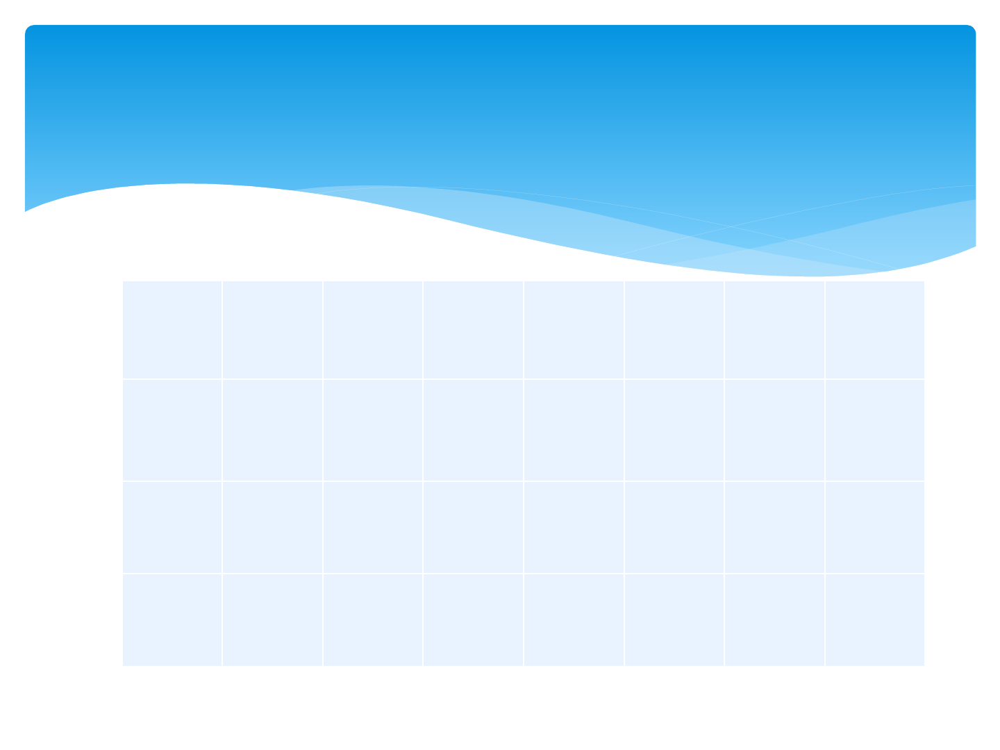
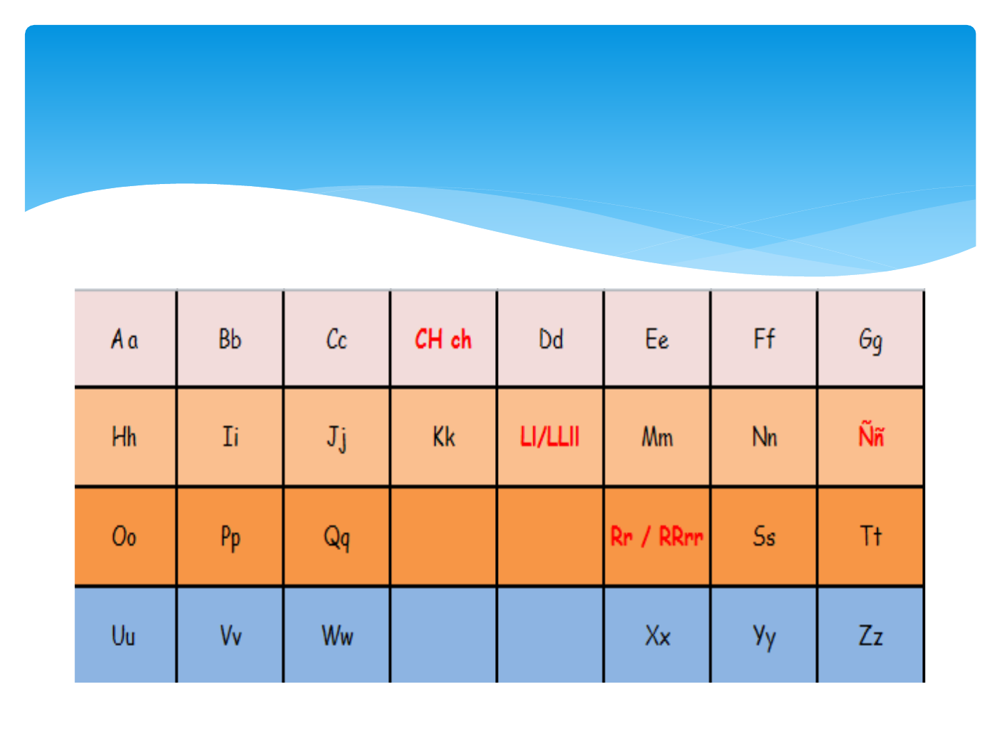
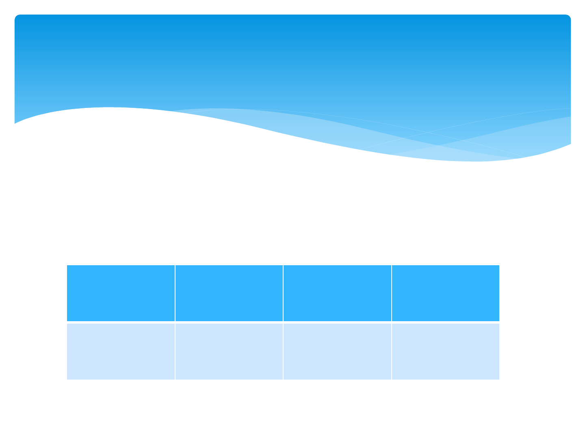
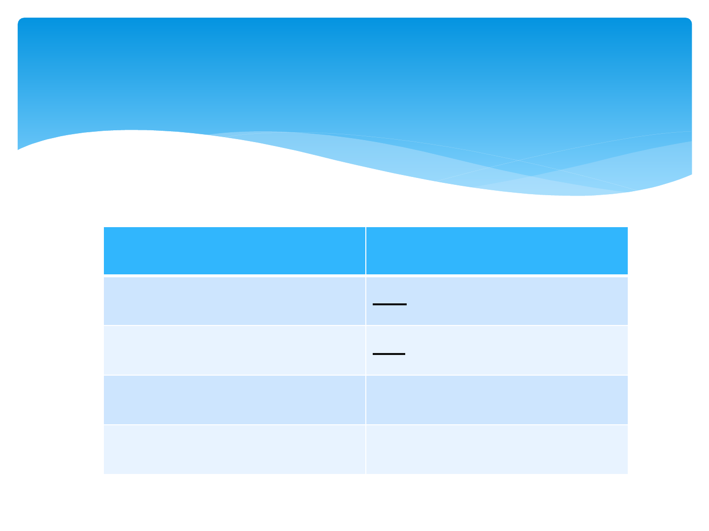
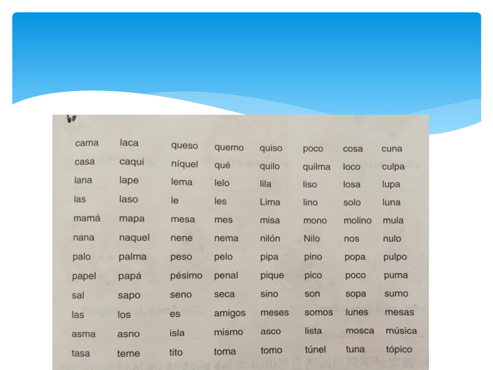

我们的第一堂西班牙语课程
Bienvenidos a la primera clase de
español

A a Bb Cc CH ch Dd Ee Ff Gg
Hh Ii Jj Kk Ll/LLll Mm Nn Ññ
Oo Pp Qq
Rr /
RRrr
Ss Tt
Uu Vv Ww
Xx Yy Zz
Alfabeto
和英语不同的是，西班牙语字母表中多出了3个不同
的字母，他们分别是：ch，ll，ñ ，但是1994年以后
，西班牙皇家学院决定ch和ll不再是独立字母，所以
只有27个字母。
五个元音，其他都是辅音，五个元音分别是 Aa, Ee,
Ii, Oo, Uu.
西班牙语一共有多少个字母呢？

西语没有音标，发音一旦掌握后，一劳永逸。因为
在掌握了西语每个字母的发音规则之后，就可以准
确读出每个单词，因此，就算你看不懂文章，却可
以用标准的西语朗读任何一篇文章，读出西语中任
何一个单词。
西班牙语发音，一次搞定

对于初学者来说容易在哪？
Ø虽然和英语不属于同一个语系，但是在很多词的结
构上，可以相互借鉴。
猜猜下面的单词是什么意思？
profesora fruta
Mapa mucho sofá
Octubre restaurante
西语难不难？

对于初学者来说难在哪里？
Ø动词各个时态，各个人称的变位
Ø名词，形容词，代词，冠词等阴阳性
，单复数之分

字母名称和发音

熟读29个西语字母，并能流利按顺序背出。
Ejercicios en clase 随堂练习
请拼读一下单词
EJERCICIOS 练习
Hola Soy María Luisa
Bienvenido todos Clase Español

A E I
A E I
O U
O U
五个元音字母的发音

辅音字母发音
c和q
ca
que ce
qui ci
co
cu

读出下列单词
Ca que qui co cu
Aca eque iqui oco ucu

L 发音有两种：
1. 置于元音前，和英语或者中文中发音一样， 如：
La le li lo lu
Ala ele ili olo ulu
2. 置于元音后，请看老师示范
al el il ol ul
辅音字母发音
L,M,N

M的发音
M发音只有一种，不论什么情况，都是发/m/ 音 ，如：
ma me mi mo mu
ama eme imi omo umu

N的发音
同字母m一样，n发音只有一种，不论什么情况，都是
发/n/ 音 ，如：
na ne ni no nu
ana ene ini ono unu

p的发音
清辅音，声带不震动
pa pe pi po pu
apa epe ipi opo upu

s的发音
s发音分两种情况：
1. 词首，元音前，清辅音，发/s/ 音
sa se si so su
asa ese isi oso usu
sano sala seno soso
若在词尾，也发/s/ 音，但发音弱且短，不能拖长音
mes masas salas

2. 当s出现在l，m，n之前，发浊化音，接近于/z/音
asma， asno，isla，mismo, pasma

t的发音
清辅音，声带不震动，发成/d/的音
ta te ti to tu
ata ete iti oto utu

Ejercicios 发音练习